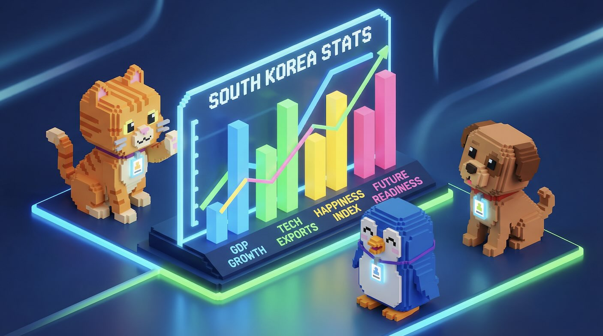

Korea OECD Statistics Dashboard 2024-2025

Korea OECD Statistics Dashboard 2024-2025
이 대시보드는 data.json 파일에서 데이터를 로드합니다.
JSON 파일은 World Bank Open Data API에서 수집된 데이터로,
node fetch-data.js 명령으로 업데이트할 수 있습니다. (하루 1회 권장)
https://api.worldbank.org/v2/
연간 GDP 성장률 (%)
country/KOR/indicator/NY.GDP.MKTP.KD.ZG
총 실업률 (% of total labor force)
country/KOR;OED;JPN;USA;DEU/indicator/SL.UEM.TOTL.ZS
합계출산율 (births per woman)
country/KOR;OED;JPN;FRA;ISR/indicator/SP.DYN.TFRT.IN
GDP 대비 R&D 지출 (%)
country/ISR;KOR;OED;SWE/indicator/GB.XPD.RSDV.GD.ZS
// World Bank API에서 한국 GDP 데이터 가져오기
async function fetchKoreaGDP() {
// KOR: 한국, NY.GDP.MKTP.KD.ZG: GDP 성장률
const url = 'https://api.worldbank.org/v2/country/KOR/indicator/' +
'NY.GDP.MKTP.KD.ZG?format=json&date=2020:2025';
const response = await fetch(url);
const data = await response.json();
// data[1]에 실제 데이터 배열이 들어있음
console.log('GDP Data:', data[1]);
return data[1];
}
• 응답 형식: JSON (format=json 파라미터 필요)
• 인증: 필요 없음 (Public Domain)
• CORS: 모든 도메인 허용
• 데이터 갱신: 연간 (일부 지표는 분기별)
더 자세한 정보는 World Bank API Docs에서 확인할 수 있습니다.